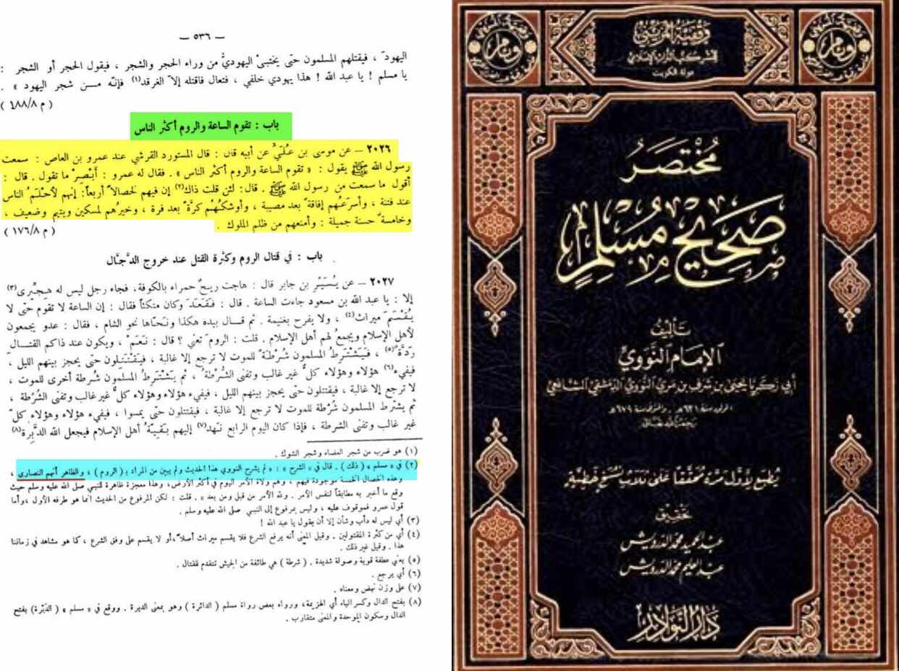
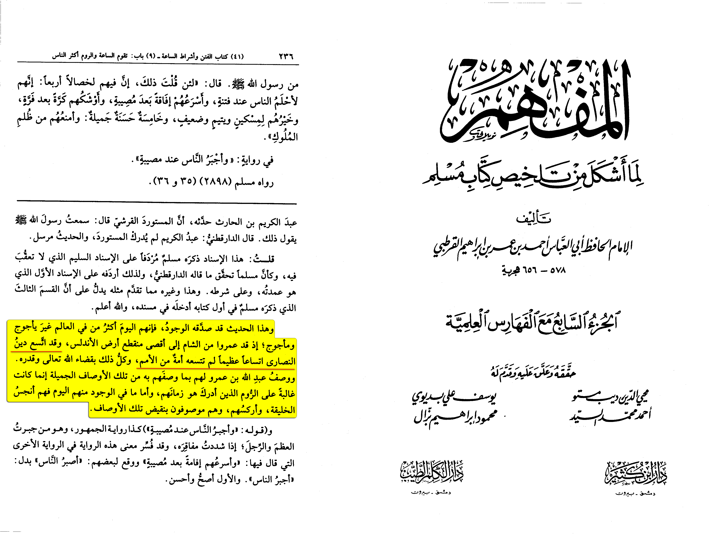
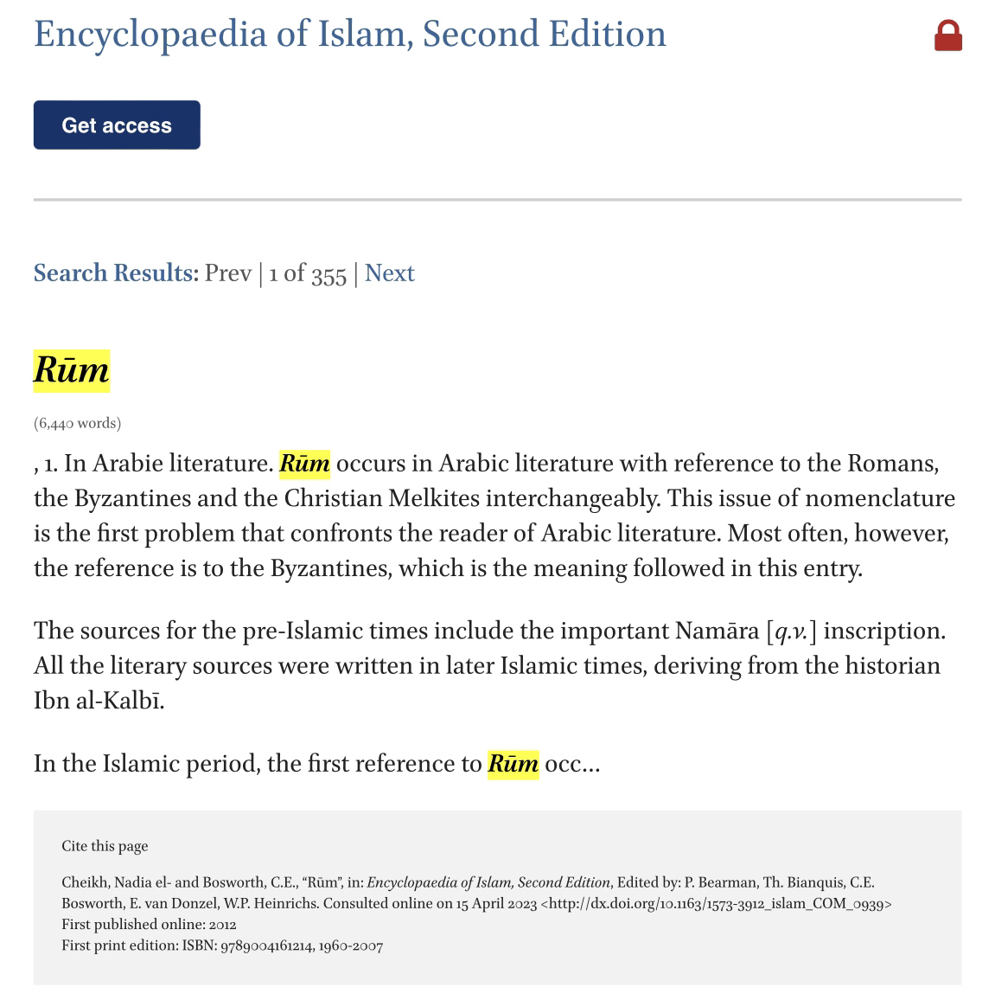

This can be one of the most misunderstood hadith
Al-Mustawrid reported: He said in front of Amr ibn al-‘As that he heard the Messenger of Allah,
peace and blessings be upon him, say, “The Hour will be established while the Romans are the majority of
people.” Amr said, “Be careful what you say.” He said, “I have said what I heard from the Messenger of Allah.”
Amr said, “If the Prophet said that, indeed, there are four good qualities in them: they are the most forbearing of people
in tribulation, they are the quickest to recover after a calamity, they are the most eager to return after a retreat,
and they are good to the poor, the orphan,
and the vulnerable. Their fifth quality is good and beautiful: they are the best at stopping the oppression of their kings.”
Source: Ṣaḥīḥ Muslim 2898
Grade: Sahih (authentic) according to Muslim
The hadith in question refers to Romans but with the qualities found we can deduce that it is referring to the Christians.
Did I invent this ?
Uthman Al-Khamis also understood it this way
https://m.youtube.com/watch?v=NIkr5jtC1vs
Not only him in another sharh of Sahih muslim it writes
“An-Nawawi didn’t explain who the “Romans” was referring to the most apparent is that it is referring
to Christians”
[Mukhtasar sharh Sahih muslim pg.536]

Another classical scholar Al-Qurtubi writes:
“And this hadith has been verified by reality for that today they are the biggest population
other than gog and magog. And the religion of the Christians has spread a spread that not a single
nation has been able to achieve. All of that is with the ruling of Allah (SWT).”
[Al-Mufhim, (7/236)]


The Byzantines were known as Rum or Roman to the Arabs. They introduced themselves as such. Since the time of the Prophet (SAW),
Rome refers to both Eastern and Western Europe, or basically wherever they had control at some point.
Romans during the time of the Prophet (ﷺ) and the Sahaba were what we call now Europeans and from today’s
standards, the entire group of Romans would include Europeans, North Americans, Australians, and New Zealanders.
In short, what one now calls the West.
Hugh N. Kennedy, in ‘The Great Arab Conquests: How the Spread of Islam Changed the World We Live In’,
states on pg. 7-8:
“Historians are accustomed to talking about the Byzantine Empire to describe the Eastern Roman Empire.
It is a convenient term to designate the Christian, Greek-speaking and –writing empire of the seventh
and eighth centuries. It is also completely out of touch with the language of the people at the time.
No one at that or any other time ever described themselves in normal life as ‘Byzantines’.
They themselves knew that they were Romans and they called themselves as such, though they used the Greek term
Romaioi to do so. Their Muslim opponents also knew them as Rum, or Romans, and this term
was often extended to include the Latin Christian inhabitants of North Africa and Spain. Despite the
violence it does to the language of the sources, I have, with some reluctance, accepted the general
scholarly usage and refer to Byzantines and the Byzantine Empire throughout.”
In ‘Who are the Romans? The Definition of Bilad al-Rum (Land of the Romans) in Medieval Islamic
Geographies’ by Koray Durak, we find the following on pg. 286:
“The region in question (i.e. Rome) is the territory that lay to the north and west of the Islamic
Near East and North Africa; it corresponds roughly to today’s Europe and Turkey.”
In Rome, New Rome, Baghdad: Pathways of Late Antiquity, Aziz al-Azmeh states that Rome according to
Muslims was generally confined to geographical Europe. Rome’s internal evolution, had shifted to the East,
and specifically to the Fertile Crescent and beyond. He further states: Even Irenaeus, Bishop of Lyons, was an Easterner,
and wrote in Greek, which had been the original liturgical language of the Church in Rome until it was slowly,
and in the fullness of time, replaced by Latin.
From the above, we can safely conclude the following:
Romans today are Europeans and their descendants. Their descendants today include North Americans
(USA and Canada) along with the Australian continent (Australia and New Zealand). In other words,
to narrow it to lesser words, we can say that Rome, in Islamic terminology, refers to what we know
today as the West.
“Ar Rum” in the Quran refers to what we now call the Byzantine Empire, however it also is used to
refer to their heirs, successors and/or descendants, by way of Western Europe and the Christians.
—————
Classical scholarly opinion is significant as they are symbolic of inexpediency. They understood
the hadith this way, without any of the historical insight that we have now. This should be sufficient.